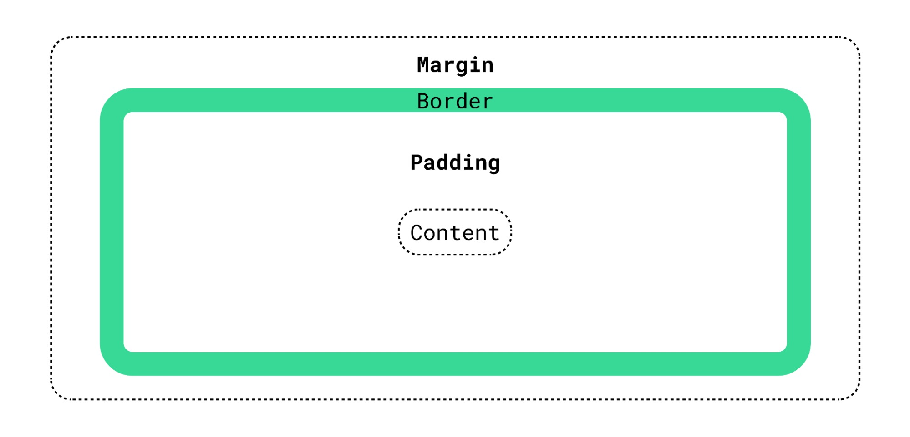

Lets first learn about each one and what they are. Have a look at the image below, this is called the box model.
The margin represents the space surrounding the box and other elements. The border is the edge of the box. Borders can be decorated however you like, invisible even, in this picutre its a thick green border. The padding represents the space between the border and the content. And lastly the content, this is what we are styling.
At first the difference between margin and padding can be confusing, especially when there is no border. They are both used to make gaps/spaces between things like content or other elements. Margin, padding and borders can be added to all four sides of an element or just one, the power is in your hands. Lets run through some examples. See this text your reading right now. See how the text does not go all the way to the edge of the white border. This is because padding has been added to p tag element, the element which contains the very text your reading right now. Make sense? The code has added padding on the outside of the content/element but still inside the border. Lets see what happens when I comment out the padding code from the p tag(commenting out code ensures that the code is not run), have a look at the images below.


As you can see in the left image, the code for padding is commented out and on the right image you can see, without padding, the text goes all the way to the border. I added nice thick black borders to these images, just to seperate that sunset background a bit. Now lets talk margin. Im going to give you with another example, one within this page. Lets look at the last two example pictures. Notice the gap between them. If we wanted to increase this gap we would do so by adjusting the margin on the images because remember it is the space outside of the borders. But not just all the margin, we only want to adjust the margin on the left and right of the images. Have a look at the space between the images. The below image is what it would look like if we adjusted the margin to 100px(px is code for pixels).
Its a much bigger gap isn't it. The gap in this example is now 200px. This is because we have added 100px margin on the left and right of each image. Margins are invisible barriers that developers create and use to seperate elements from one another. Hopefully now you have a better understanding of the difference between these 3 styling tools.